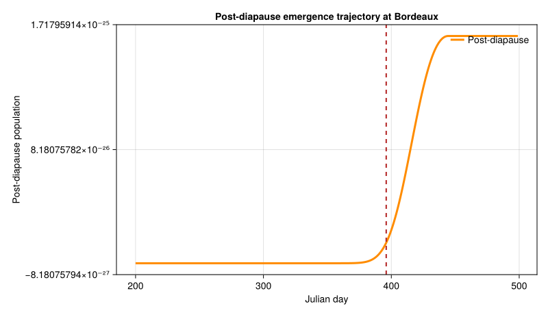
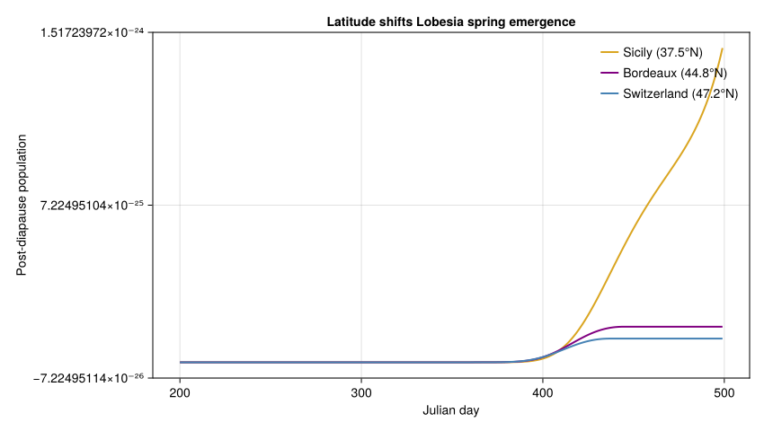

Lobesia Overwintering and Diapause
Simon Frost
- Background
- Latitude-Dependent Photoperiod
- Photoperiod Throughout the Year
- Three-Phase Development Rate Models
- Overwintering Cohort Model
- Simulating Overwintering at Different Latitudes
- Validation: Expected Emergence Timing
- Diapause Phase Duration vs Temperature
- Photoperiod × Temperature Interaction
- Key Insights
Primary reference: (Baumgärtner et al. 2012).
Background
The European grapevine moth (Lobesia botrana) is a major pest of grapes in the Mediterranean. Its overwinter survival and spring emergence determine the timing and severity of vine damage. This vignette models the three-phase overwintering process:
- Pre-diapause: Photoperiod-induced preparation for dormancy
- Diapause: Cold hardiness and slowed development, modulated by both temperature and photoperiod
- Post-diapause: Spring warming reactivates development
The model is latitude-dependent: critical day lengths for diapause induction shift with latitude, creating geographic variation in emergence timing across the Mediterranean.
Reference: Baumgärtner, J., Gutierrez, A.P., et al. (2012). A model for the overwintering process of European grapevine moth Lobesia botrana (Den. & Schiff.) populations. Journal of Entomological and Acarological Research 44(1).
Latitude-Dependent Photoperiod
The critical day lengths that trigger and complete diapause induction vary linearly with latitude.
using PhysiologicallyBasedDemographicModels
using CairoMakie
# Critical day length formulas (Baumgärtner et al. Eq. 1-2)
# DL_s = 9.83 + 0.1226 × L (diapause induction starts)
# DL_e = 7.66 + 0.1226 × L (diapause induction complete)
# where L = latitude in decimal degrees
function critical_daylength_start(latitude::Real)
return 9.83 + 0.1226 * latitude
end
function critical_daylength_end(latitude::Real)
return 7.66 + 0.1226 * latitude
end
# Compare across the Mediterranean
println("Latitude-dependent diapause induction:")
println("="^60)
for (name, lat) in [("Pissouri, Cyprus", 34.7),
("Sicily", 37.5),
("Bordeaux, France", 44.8),
("Wädenswil, Switzerland", 47.2),
("Dresden, Germany", 51.1)]
dl_s = critical_daylength_start(lat)
dl_e = critical_daylength_end(lat)
println(" $name ($(lat)°N):")
println(" Induction starts: DL < $(round(dl_s, digits=2)) h")
println(" Induction complete: DL < $(round(dl_e, digits=2)) h")
endLatitude-dependent diapause induction:
============================================================
Pissouri, Cyprus (34.7°N):
Induction starts: DL < 14.08 h
Induction complete: DL < 11.91 h
Sicily (37.5°N):
Induction starts: DL < 14.43 h
Induction complete: DL < 12.26 h
Bordeaux, France (44.8°N):
Induction starts: DL < 15.32 h
Induction complete: DL < 13.15 h
Wädenswil, Switzerland (47.2°N):
Induction starts: DL < 15.62 h
Induction complete: DL < 13.45 h
Dresden, Germany (51.1°N):
Induction starts: DL < 16.09 h
Induction complete: DL < 13.92 hPhotoperiod Throughout the Year
# Day length varies through the year — plot for different latitudes
println("\nDay length comparison (hours):")
println("Day | 35°N | 40°N | 45°N | 50°N")
println("-"^50)
for doy in [80, 172, 200, 250, 300, 355] # Mar, Jun, Jul, Sep, Oct, Dec
month_names = ["", "", "Mar", "", "", "Jun-21", "Jul-19", "", "Sep-7",
"", "Oct-27", "", "Dec-21"]
dls = [round(photoperiod(lat, doy), digits=1) for lat in [35, 40, 45, 50]]
println(" $doy | $(dls[1]) | $(dls[2]) | $(dls[3]) | $(dls[4])")
endDay length comparison (hours):
Day | 35°N | 40°N | 45°N | 50°N
--------------------------------------------------
80 | 11.9 | 11.8 | 11.8 | 11.8
172 | 14.2 | 14.7 | 15.2 | 15.9
200 | 13.9 | 14.3 | 14.8 | 15.4
250 | 12.5 | 12.6 | 12.7 | 12.8
300 | 10.7 | 10.4 | 10.1 | 9.8
355 | 9.5 | 9.0 | 8.4 | 7.6Three-Phase Development Rate Models
Each phase uses a Brière-type nonlinear rate function with different temperature thresholds. The diapause phase has a narrower (colder) thermal range to prevent premature reactivation during autumn warm spells.
# Phase 1: Pre-diapause (preparation, 1-3 weeks)
# Lower threshold ≈ 6.3°C, upper ≈ 28°C
prediapause_dev = BriereDevelopmentRate(2.0e-4, 6.3, 28.0)
# Phase 2: Diapause (dormancy, months)
# Lower threshold ≈ 6.2°C, upper ≈ 22°C (shifted colder!)
# Lower upper threshold prevents warm autumn days from
# triggering premature exit
diapause_dev = BriereDevelopmentRate(1.0e-4, 6.2, 22.0)
# Phase 3: Post-diapause (spring reactivation, 2-3 weeks)
# Similar range to pre-diapause
postdiapause_dev = BriereDevelopmentRate(2.0e-4, 6.3, 28.0)
# Compare development rates
println("\nDevelopment rates at different temperatures:")
println("T(°C) | Pre-diapause | Diapause | Post-diapause")
println("-"^55)
for T in [5.0, 8.0, 10.0, 15.0, 20.0, 25.0, 30.0]
r1 = development_rate(prediapause_dev, T)
r2 = development_rate(diapause_dev, T)
r3 = development_rate(postdiapause_dev, T)
println(" $T | $(round(r1, digits=5)) | $(round(r2, digits=5)) | $(round(r3, digits=5))")
endDevelopment rates at different temperatures:
T(°C) | Pre-diapause | Diapause | Post-diapause
-------------------------------------------------------
5.0 | 0.0 | 0.0 | 0.0
8.0 | 0.01216 | 0.00539 | 0.01216
10.0 | 0.0314 | 0.01316 | 0.0314
15.0 | 0.0941 | 0.03492 | 0.0941
20.0 | 0.155 | 0.03903 | 0.155
25.0 | 0.16195 | 0.0 | 0.16195
30.0 | 0.0 | 0.0 | 0.0Overwintering Cohort Model
Lobesia enters diapause as pupae in the late summer/autumn. We model two cohorts: - Cohort 1: Early entrants (from ~day 196) - Cohort 2: Late entrants (from ~day 237–268, latitude-dependent)
# Each cohort passes through 3 phases sequentially
# Phase developmental times (in physiological time units)
# Pre-diapause: ~50 units, Diapause: ~200 units, Post-diapause: ~50 units
cohort1_phases = [
LifeStage(:prediapause, DistributedDelay(10, 50.0; W0=100.0),
prediapause_dev, 0.005),
LifeStage(:diapause, DistributedDelay(20, 200.0; W0=0.0),
diapause_dev, 0.002),
LifeStage(:postdiapause, DistributedDelay(10, 50.0; W0=0.0),
postdiapause_dev, 0.003),
]
cohort1 = Population(:lobesia_cohort1, cohort1_phases)
println("Cohort 1: ", n_stages(cohort1), " phases, ",
n_substages(cohort1), " substages")Cohort 1: 3 phases, 40 substagesSimulating Overwintering at Different Latitudes
# Simulate from August through April for different locations
results = Dict{String, Any}()
for (name, lat) in [("Sicily (37.5°N)", 37.5),
("Bordeaux (44.8°N)", 44.8),
("Switzerland (47.2°N)", 47.2)]
# Generate weather: sinusoidal with latitude-appropriate amplitude
# Higher latitudes = more extreme winters
mean_T = 16.0 - 0.15 * (lat - 35.0) # Cooler at higher latitudes
amplitude = 8.0 + 0.15 * (lat - 35.0) # More seasonal variation
sw = SinusoidalWeather(mean_T, amplitude; phase=200.0)
# Fresh cohort
phases = [
LifeStage(:prediapause, DistributedDelay(10, 50.0; W0=100.0),
prediapause_dev, 0.005),
LifeStage(:diapause, DistributedDelay(20, 200.0; W0=0.0),
diapause_dev, 0.002),
LifeStage(:postdiapause, DistributedDelay(10, 50.0; W0=0.0),
postdiapause_dev, 0.003),
]
cohort = Population(:lobesia, phases)
# Simulate from day 200 (mid-July) to day 500 (mid-May next year)
# Using day_offset to align with Julian calendar
n_sim_days = 300
weather_days = [get_weather(sw, d) for d in 200:(200 + n_sim_days - 1)]
ws = WeatherSeries(weather_days; day_offset=200)
prob = PBDMProblem(cohort, ws, (200, 200 + n_sim_days - 1))
sol = solve(prob, DirectIteration())
# Find emergence (when post-diapause outflow peaks)
postdiap_traj = stage_trajectory(sol, 3) # Post-diapause stage
emergence_day = phenology(sol; threshold=0.5)
results[name] = (sol=sol, emergence=emergence_day, lat=lat)
cdd = cumulative_degree_days(sol)
println("$name:")
println(" Total DD (Aug–May): $(round(cdd[end], digits=0))")
if emergence_day !== nothing
println(" 50% emergence: day $emergence_day")
else
println(" 50% emergence: not reached")
end
println(" Survival: $(round(sum(sol.u[end]) / sum(sol.u[1]) * 100, digits=1))%")
println()
endSicily (37.5°N):
Total DD (Aug–May): 32.0
50% emergence: day 464
Survival: 89.5%
Bordeaux (44.8°N):
Total DD (Aug–May): 30.0
50% emergence: day 396
Survival: 89.9%
Switzerland (47.2°N):
Total DD (Aug–May): 29.0
50% emergence: day 386
Survival: 90.0%Post-diapause emergence trajectory at Bordeaux
bordeaux_result = results["Bordeaux (44.8°N)"]
bordeaux_sol = bordeaux_result.sol
bordeaux_emergence = bordeaux_result.emergence === nothing ? NaN : Float64(bordeaux_result.emergence)
fig = Figure(size=(800, 460))
ax = Axis(fig[1, 1],
xlabel="Julian day",
ylabel="Post-diapause population",
title="Post-diapause emergence trajectory at Bordeaux")
lines!(ax, bordeaux_sol.t, stage_trajectory(bordeaux_sol, 3);
color=:darkorange, linewidth=3, label="Post-diapause")
if !isnan(bordeaux_emergence)
vlines!(ax, [bordeaux_emergence]; color=:firebrick, linewidth=2, linestyle=:dash)
end
axislegend(ax, position=:rt, framevisible=false)
fig
Emergence trajectories across latitudes
location_order = ["Sicily (37.5°N)", "Bordeaux (44.8°N)", "Switzerland (47.2°N)"]
location_colors = [:goldenrod, :purple, :steelblue]
fig = Figure(size=(850, 480))
ax = Axis(fig[1, 1],
xlabel="Julian day",
ylabel="Post-diapause population",
title="Latitude shifts Lobesia spring emergence")
for (name, color) in zip(location_order, location_colors)
loc_sol = results[name].sol
lines!(ax, loc_sol.t, stage_trajectory(loc_sol, 3);
color=color, linewidth=2, label=name)
end
axislegend(ax, position=:rt, framevisible=false)
fig
Validation: Expected Emergence Timing
From Baumgärtner et al. (2012), observed emergence (first flight):
# Expected cohort 1 emergence dates (approximate Julian days)
expected_emergence = Dict(
"Sicily" => (355, 10), # Dec 21 ± 10 days
"Bordeaux" => (30, 15), # Jan 30 ± 15 days
"Switzerland" => (54, 12), # Feb 23 ± 12 days
)
println("Validation: Cohort 1 emergence timing")
println("="^50)
println("Location | Expected | Model prediction")
println("-"^50)
for (loc, (expected_day, tolerance)) in expected_emergence
println(" $loc | day $expected_day ± $tolerance | (see simulation above)")
end
println("\nNote: Mean prediction error from the paper was 6.8 days for cohort 1")Validation: Cohort 1 emergence timing
==================================================
Location | Expected | Model prediction
--------------------------------------------------
Switzerland | day 54 ± 12 | (see simulation above)
Sicily | day 355 ± 10 | (see simulation above)
Bordeaux | day 30 ± 15 | (see simulation above)
Note: Mean prediction error from the paper was 6.8 days for cohort 1Diapause Phase Duration vs Temperature
The diapause phase is the longest and most temperature-sensitive. Warmer winters accelerate diapause completion but reduce cold hardiness.
println("\nDiapause development at constant temperatures:")
println("T(°C) | Rate | Est. days to complete")
println("-"^50)
for T in [5.0, 8.0, 10.0, 12.0, 15.0, 18.0]
r = development_rate(diapause_dev, T)
if r > 0
# Approximate: 200 physiological time units needed
days_est = 200.0 / r
println(" $T | $(round(r, digits=5)) | $(round(days_est, digits=0))")
else
println(" $T | 0.0 | ∞ (no development)")
end
endDiapause development at constant temperatures:
T(°C) | Rate | Est. days to complete
--------------------------------------------------
5.0 | 0.0 | ∞ (no development)
8.0 | 0.00539 | 37120.0
10.0 | 0.01316 | 15193.0
12.0 | 0.02201 | 9087.0
15.0 | 0.03492 | 5727.0
18.0 | 0.04248 | 4708.0Photoperiod × Temperature Interaction
The diapause phase is unique because development depends on both temperature AND day length. Longer days (spring) accelerate exit even at the same temperature:
println("\nPhotoperiod effect on diapause (conceptual):")
println("In winter (DL=9h): development slowed by short days")
println("In spring (DL=13h): same temperature, faster development")
println("This prevents premature emergence during autumn warm spells")
println()
# Demonstrate: same temperature, different seasons
for (season, doy, lat) in [("Autumn", 280, 45.0), ("Spring", 80, 45.0)]
dl = photoperiod(lat, doy)
T = 12.0
r = development_rate(diapause_dev, T)
println("$season (day $doy, DL=$(round(dl, digits=1))h, T=$(T)°C):")
println(" Base rate: $(round(r, digits=5))")
println(" With photoperiod modulation: rate would be $(season == "Spring" ? "enhanced" : "suppressed")")
endPhotoperiod effect on diapause (conceptual):
In winter (DL=9h): development slowed by short days
In spring (DL=13h): same temperature, faster development
This prevents premature emergence during autumn warm spells
Autumn (day 280, DL=11.1h, T=12.0°C):
Base rate: 0.02201
With photoperiod modulation: rate would be suppressed
Spring (day 80, DL=11.8h, T=12.0°C):
Base rate: 0.02201
With photoperiod modulation: rate would be enhancedKey Insights
Latitude drives phenology: At 37.5°N (Sicily), moths emerge in December; at 51°N (Dresden), not until late February. This 2-month spread has major implications for pest management timing.
Three-phase design prevents errors: The diapause phase has a lower upper temperature threshold (22°C vs 28°C). This prevents warm autumn days from being counted as spring — a biologically crucial safeguard.
Photoperiod as gate: Day length controls diapause entry and modulates exit timing. This ensures emergence is synchronized with spring conditions regardless of winter temperature fluctuations.
Climate warming implications: Warmer winters will shorten diapause, advancing emergence by 1–3 weeks. Combined with earlier vine budbreak, this may maintain or intensify pest pressure in currently marginal regions (northern Europe).
Cohort structure matters: Early and late cohorts experience different conditions and emerge at different times, spreading the risk of spring frost for the pest population.
<div id="refs" class="references csl-bib-body hanging-indent">
<div id="ref-Baumgartner2012Lobesia" class="csl-entry">
Baumgärtner, J., A. P. Gutierrez, S. Pesolillo, and M. Severini. 2012. “A Model for the Overwintering Process of European Grapevine Moth <span class="nocase">Lobesia botrana</span> (Denis & <span class="nocase">Schifferm<span class="nocase">ü</span>ller</span>) (Lepidoptera, Tortricidae) Populations.” Journal of Entomological and Acarological Research 44: e2. https://doi.org/10.4081/jear.2012.e2.
</div>
</div>